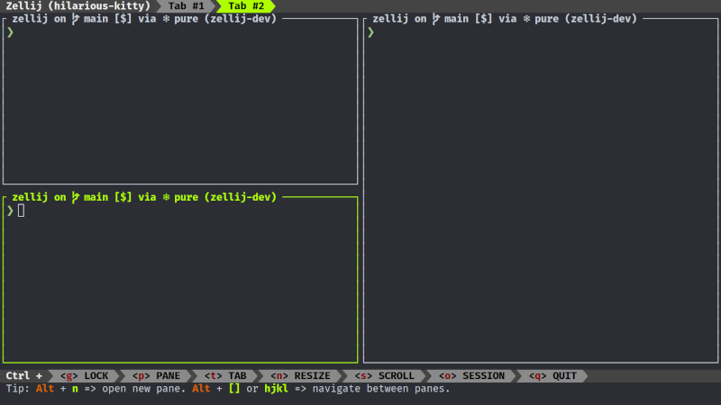

Outils "Blazing-Fast" pour Linux écrits en Rust
Posté le 14/10/2024 dans Rust

Depuis l'avènement de Rust et du fameux adage "Rewrite it in Rust", de nombreux outils système ont été réécrits en Rust pour bénéficier de meilleures performances dites blazing-fast, ainsi que d'une fluidité et d'une ergonomie plus modernes.
Il est temps de remplacer les classiques ls, cd, tmux, grep ou encore find par leurs jumeaux Rustaceans !
C'est parti !
alacritty
On commence par le plus évident, le terminal. Alacritty est un terminal moderne qui se veut très simple dans le sens où il ne va pas gérer les onglets et le split de fenêtres (on utilisera autre chose pour ça juste après). Il tourne sous OpenGL et bénéficie donc de la performance de ta carte graphique. Il supporte les couleurs, les polices et Wayland. Il a également un mode Vi et est hautement configurable via un fichier TOML.

zellij
Adieu tmux et bonjour Zellij ! C'est un gestionnaire de fenêtres pour terminal qui fonctionne parfaitement avec Alacritty. C'est tout comme tmux, mais en mieux. Il peut gérer les onglets, le split des fenêtres et les sessions. Tu pourras également l'étendre grâce à un système de plugins.
starship
Maintenant qu'on a notre terminal et notre gestionnaire de fenêtres, il te faut un joli prompt. Starship est là pour ça ! La configuration par défaut est vraiment top, et si tu ne veux pas te prendre la tête, tu peux la conserver telle quelle. Tu auras directement les informations de tes branches git, des versions des langages du projet sur lequel tu travailles, et bien d'autres choses.

atuin
Atuin se charge de gérer l'historique de ton shell. Tu pourras synchroniser ton historique de manière encryptée entre plusieurs machines. Ton historique sera donc accessible de partout ! Il sera stocké dans une base de données SQLite, ce qui te permettra d'effectuer des recherches avancées et rapides.
zoxide
On va commencer par remplacer les outils GNU classiques. Zoxide va remplacer ta commande cd. Il te permettra de te déplacer dans tes dossiers en fonction de leur fréquence d'utilisation. Donc, imaginons que tu as un projet dans un répertoire /home/morgan/dev/emploi-du-temps et que tu y vas souvent, il te suffira de faire un z emploi pour y accéder depuis n'importe où. Une fois adopté, tu pourras même te créer un alias cd pour z.
ripgrep
Cette fois-ci, on va remplacer grep par ripgrep. C'est un outil vraiment puissant qui te permet de chercher dans tes fichiers de manière récursive très rapidement. Franchement, la première fois que je l'ai lancé, j'ai été vraiment surpris. Une recherche dans beaucoup de dossiers a quasiment été instantanée.
eza
Eza quant à lui, va remplacer ton ls. Comme pour Zoxide, tu pourras te créer un alias ls pour eza. L'affichage te fournira une jolie coloration syntaxique en fonction des types de fichiers.
bat
Pour remplacer cat, on va utiliser bat, qui, comme pour Eza, va te fournir une coloration syntaxique de tes fichiers.
fd
La commande find n'est franchement pas la plus simple à utiliser. fd se veut beaucoup plus user-friendly. L'exécution de la recherche est réalisée de manière parallèle, donc c'est très rapide. Tu auras également les couleurs pour faciliter l'affichage.
---
Et voilà, on a fait le tour ! N'hésite pas à commenter si tu en connais d'autres, ça me permettra d'agrandir ma besace !